Valuation of Fintech Companies
From angel scorecards and VC discount rates to market multiples, DCF models, and adjusted EBITDA — the art and science of pricing fintech companies at every stage of their lifecycle.
Valuation is an art, not a science.
Value is what someone will pay. The party in the stronger bargaining position steers the price. For early-stage companies with no revenue history, qualitative factors — team, idea, market size — dominate. Traditional models simply do not work.
Four steps.
Most valuation methodologies boil down to four steps: identify value drivers, forecast the future, discount to present value, and divide the pie.
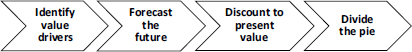
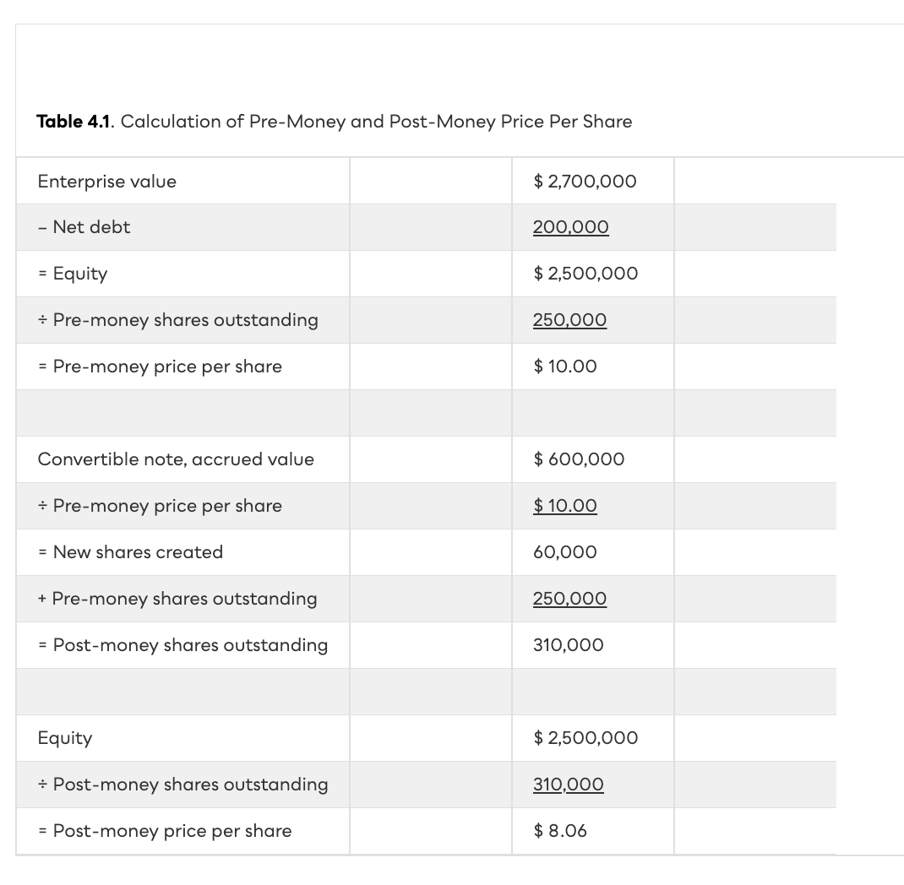
Bill Payne Scorecard.
A relative valuation method that starts from an average pre-money valuation of $2M for recent angel-funded deals in the region, then adjusts up or down across seven dimensions based on due diligence and expert judgment.

Berkus & Risk Factor Summation.
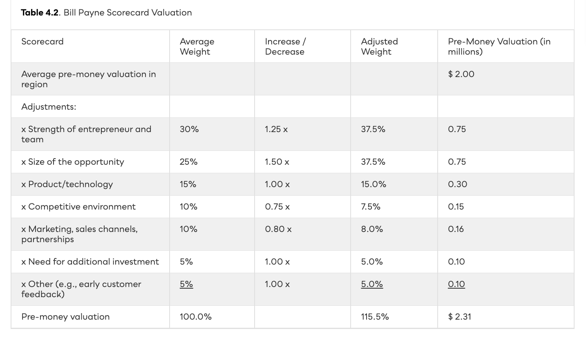
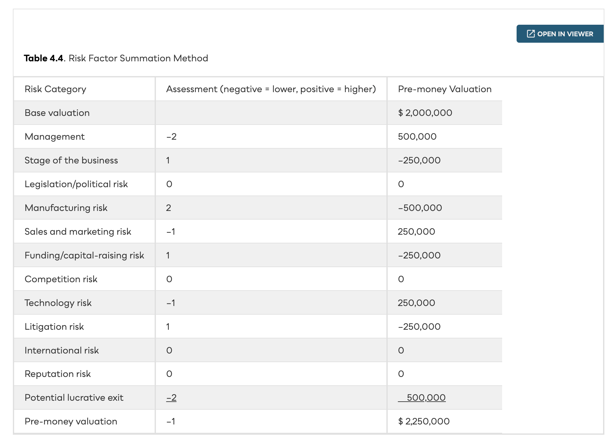
The VC Method.
VCs target an IRR of 25–35% over 6–10 years. They work backward from the terminal value (TV) at exit, adjust the discount rate for bankruptcy risk, and back out their investment today.
Market multiples & precedent transactions.
Relative valuation standardizes company value using equity multiples (P/E) and enterprise multiples (EV/Sales, EV/EBITDA). Use 3–5 comparable companies; calculate average and median, dropping outliers. Precedent transactions add a control premium from completed acquisitions.
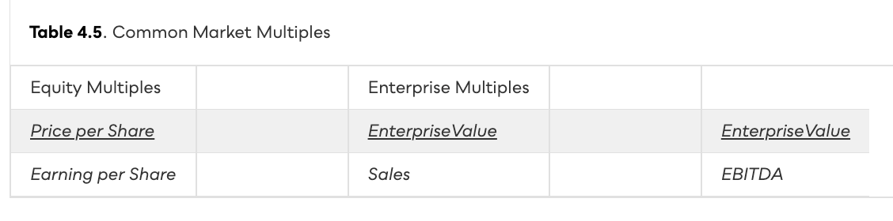
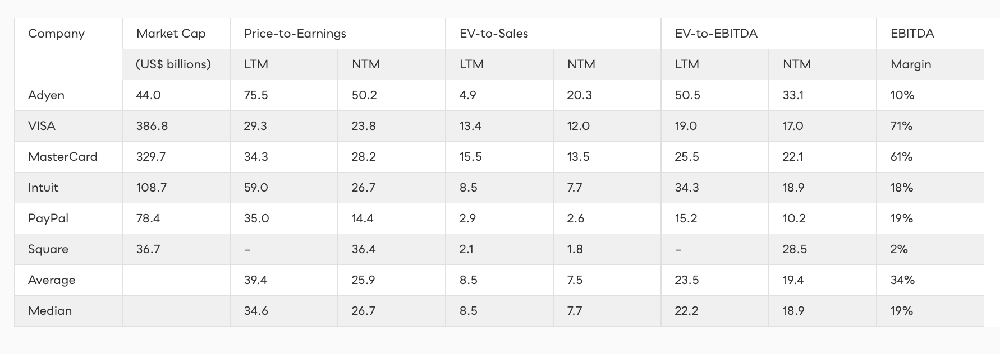
The DCF model.
Forecast free cash flows (FCFF) over 5–10 years, discount at WACC (~10% for mature firms), then add a terminal value. Cannot be used for banks or financial intermediaries.
Exit multiple (Eq. 9): TV = EBITDAt × EV/EBITDA. Example: $20M EBITDA × 12× = $240M. Both methods should produce similar TV.
ARK Invest & adjusted EBITDA.
ARK Invest argues GAAP metrics penalize disruptive companies investing heavily to scale. Wood proposes five adjustments to EBITDA. ARK rose to $50B AUM by Feb 2021, then collapsed ~70% to $16B by mid-2022.
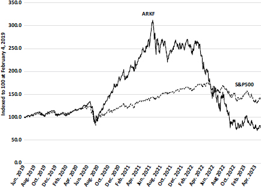
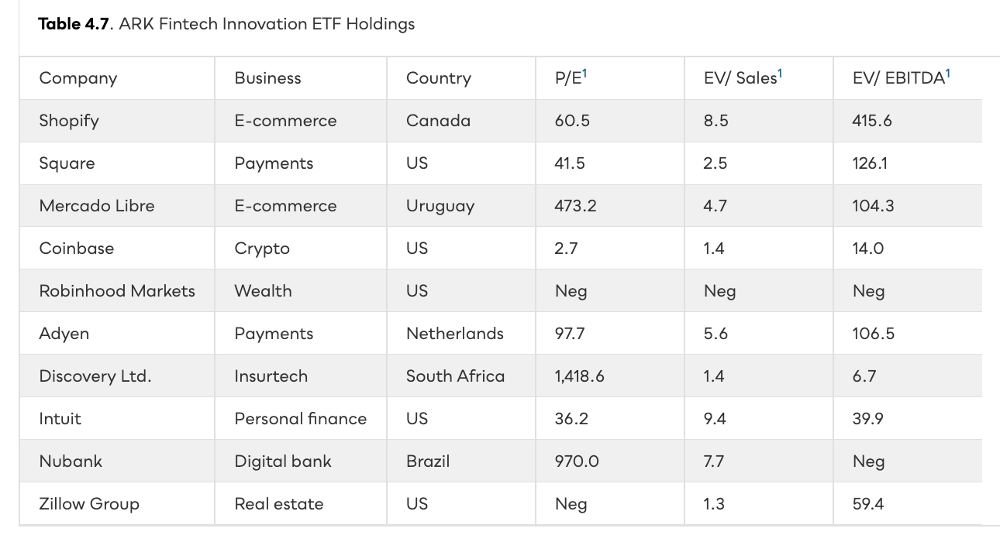
Valuing banks: JPMorgan.
Banks lack sales and EBITDA, so enterprise multiples and DCF cannot be used. Analysts rely on equity multiples (P/E, P/Book) and financial ratios (NIM, efficiency ratio, ROA, ROE).
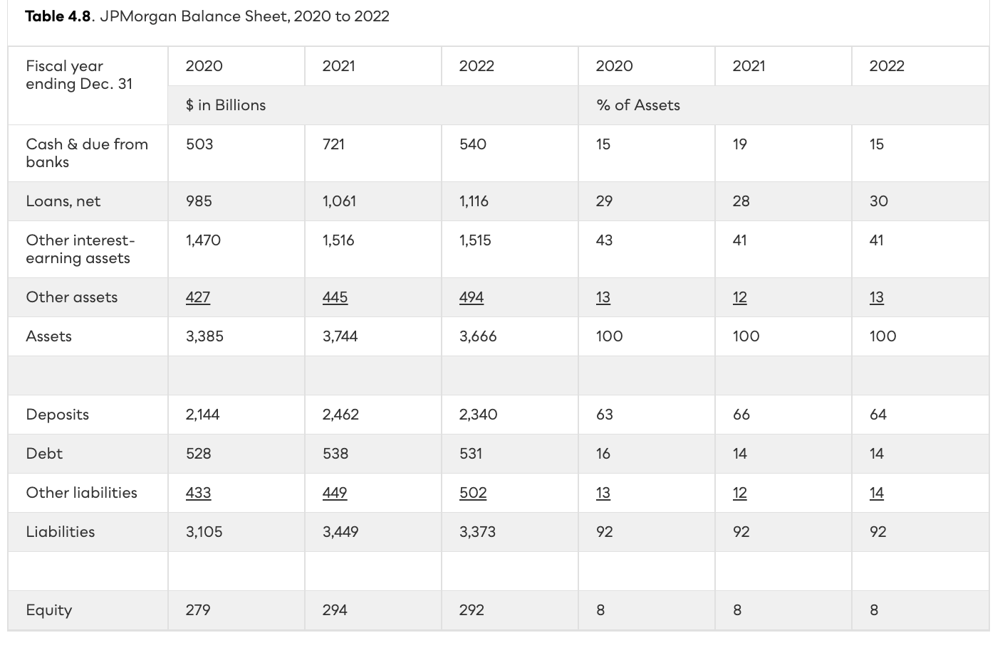
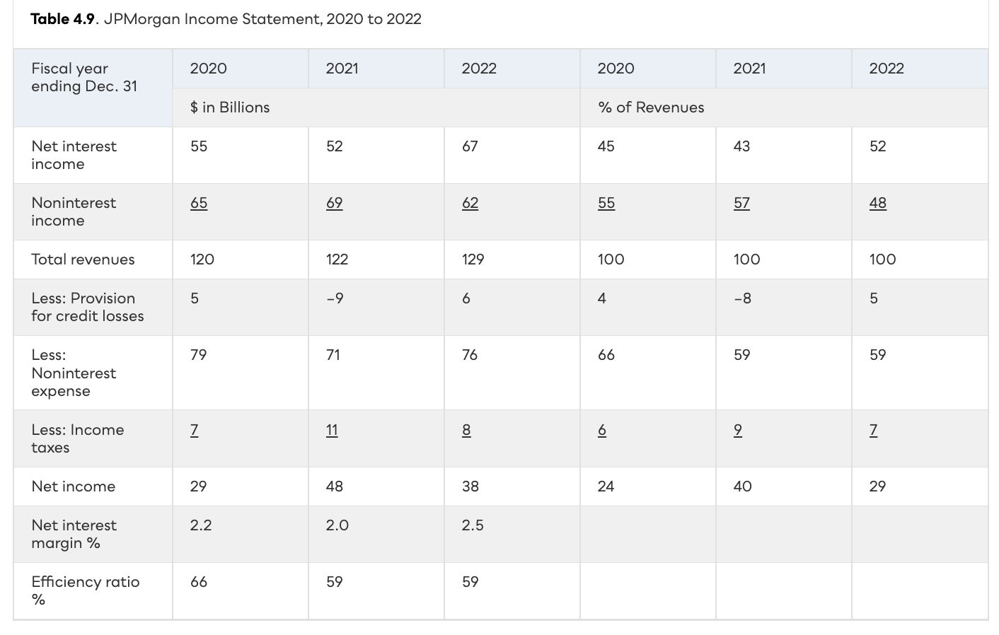
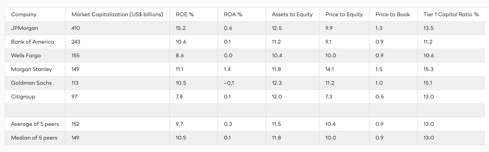
Fintech multiples: a wide spectrum.
Table 4.11 shows NTM multiples and financial ratios for seven listed fintechs. Extreme variation highlights why relative valuation is unreliable for younger fintech companies.
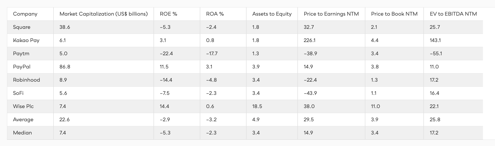
Price is what you pay. Value is what you get.
Early-stage: angel scorecards (Payne $2M base, Berkus max $2.5M, RFS ±$250K per risk). Growth-stage: VC method works backward from terminal value at 25–35% target IRR, adjusted for bankruptcy probability. Mature: market multiples of 3–5 comparables (P/E, EV/Sales, EV/EBITDA) or DCF with WACC ~10% and TV = 70–80% of EV. Banks: P/E and P/Book only (no DCF). Disruptive fintechs: GAAP metrics may penalize growth investing — adjusted EBITDA is one lens but always verify.